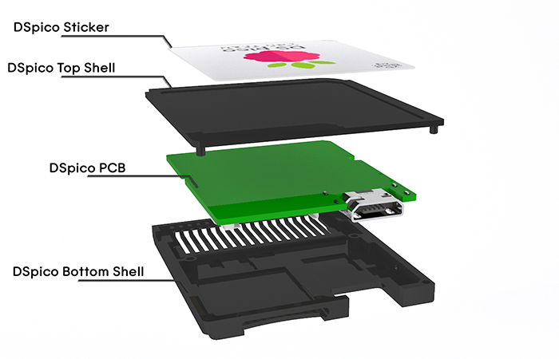
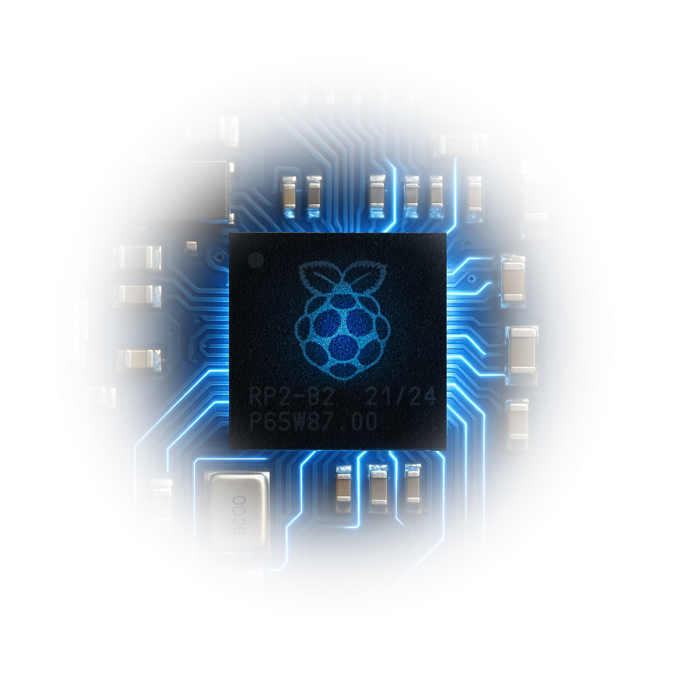

The DSpico is the open-source flashcart from the LNH Team. Designed for both DS and DSi consoles, it features fully open hardware and firmware built on the RP2040 microcontroller.
All DSpico fabrication files are open-source and available for download or inspection.
The DSpico Firmware is the official firmware for the DSpico, running on the RP2040 microcontroller.
Versatile. Flexible.
The DSpico firmware is compatible with modified and unmodified DS, DSi and 3DS consoles, allowing you to use DSpico on any console you own.
Our firmware implements a multi-bootloader solution, allowing you to configure up to two different bootloaders that will be used depending on which console-type (DS or DSi/3DS) you are using. The DSpico firmware takes care of detecting your console, and loading the appropriate bootloader.
Our firmware comes with support for WRFUxxed: An all-access DSi-mode exploit that allows DSpico to be run on unmodified DSi and 3DS consoles, with full access to DSi exclusive features. Ntrboot for 3DS and DSi is also supported.
Fast. Reliable.
The DSpico firmware is fast, reaching speeds up to ~6MB/s when reading from a microSD card.
Our firmware makes the DSpico power-efficient, only consuming ~57mW on average, giving you more play time with no compromise.